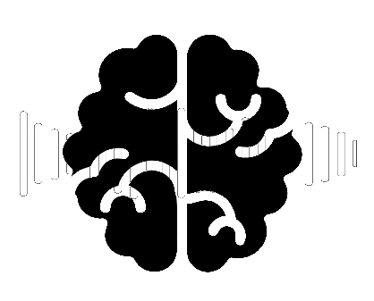
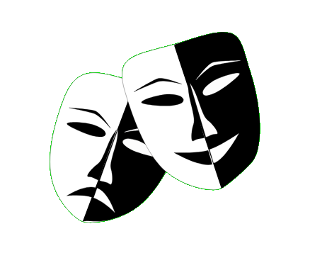
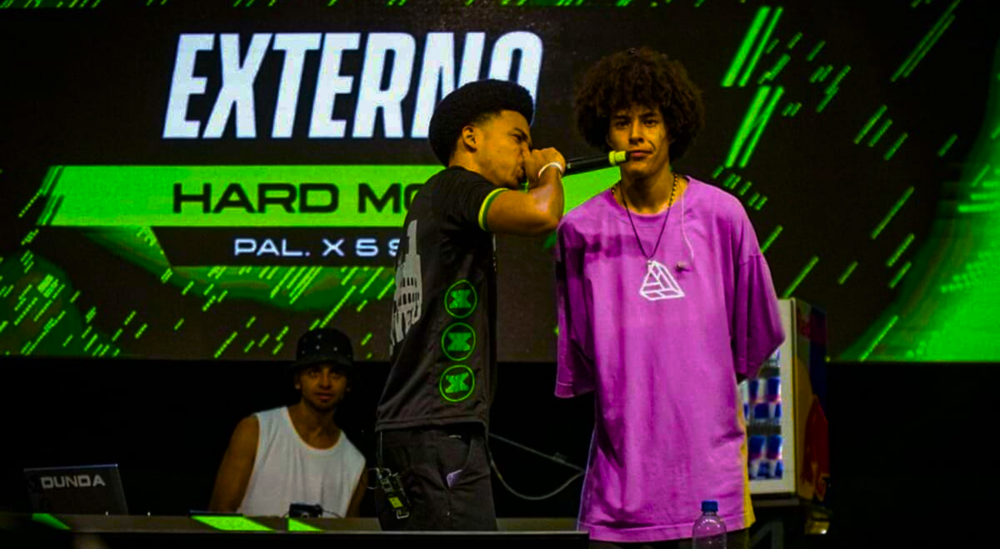

InfoRimas
InfoRimas

Batalhas de rima são competições de rap em que MCs se enfrentam, se atacando e respondendo com versos improvisados (freestyle). O vencedor é decidido pela plateia ou por jurados, que avaliam as rimas.

Em meados da década de 1980, com a popularização do Hip Hop no Brasil, surgiram espaços para praticar seus elementos, como break, graffiti e rap. Nesses locais, MCs começaram a improvisar e disputar rimas.
Nos anos 2000, as batalhas de rima ficaram mais organizadas e populares, principalmente com a Batalha do Santa Cruz, em São Paulo.

TÉCNICAS DE RIMAS
GÍRIAS/TERMOS USADOS NA CULTURA

ESTILOS DE RIMA
Treine utilizando os modos de treino inspirado na FMS (Freestyle Master Series), nos modos easy e hard. Neles, palavras aleatórias surgem no telão, e os MCs têm 60 segundos para rimar com cada uma delas.

Cadastre-se no site para aproveitar o melhor do Hip-hop! Aprenda tudo sobre rimas, mergulhe na cultura das batalhas e pratique suas melhores improvisações.
Cadastre-se